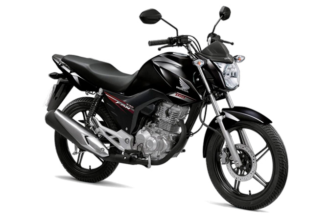
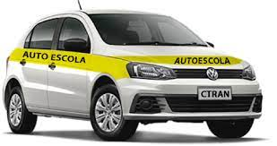
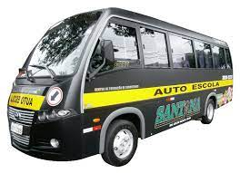

Categoria A
Moto
Com esse tipo de carteira de motorista, é possível conduzir veículos de duas ou três rodas, com ou sem carro lateral, com mais que 50 cm³ de cilindrada. Além disso, também é possível conduzir os ciclomotores da categoria anterior (ACC).

Categoria B
Carro
A categoria B habilita o motorista a conduzir veículo motorizado, cujo peso bruto total não exceda a 3.500 kg e cuja lotação não exceda a 8 lugares, excluindo o motorista.
